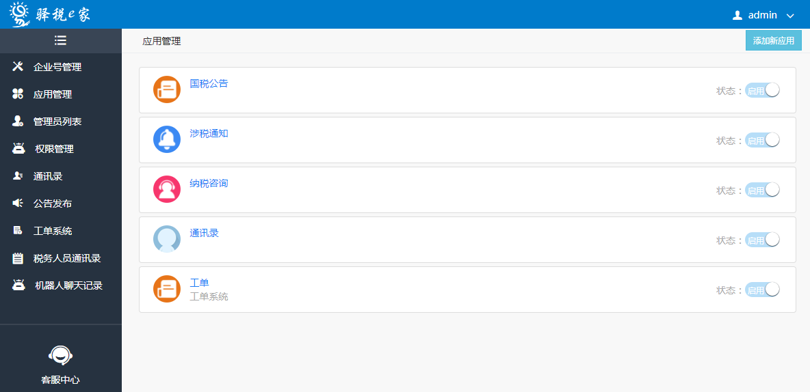
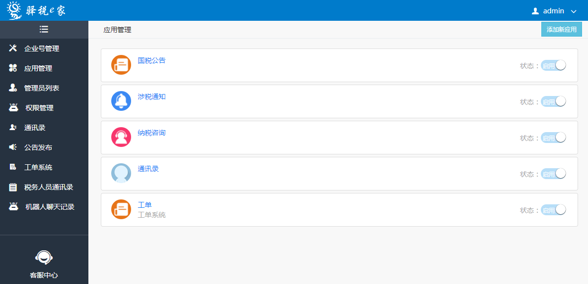

项目介绍
- 税收管理平台：
该项目是四川省国家税务局为统计和监控全省税收而开发，包括各税种的统计、疑点数据监控、各地市州数据上报汇总等功能。
系统采用传统的SSM框架开发，前端采用EasyUI + Ztree + layer 等插件，兼容IE8
- 系统难点：
统计数据量上亿，做聚合运算查询时间缓慢，所以本系统附带还开发有一套数据处理系统将数据进行固化提高数据查询速度，并牺牲了查询的及时性(后期还将接入大数据平台) 。 数据处理程序采用的是Spring的任务调度模块（也就是轻量级的Quartz），并使用开源项目 XXL-JOB进行任务调度。
项目截图
 


项目职责
项目一期工程负责编码，二期负责项目需求分析，项目搭建，登录模块和处理程序的编写工作。
其他
项目中遇到的困难：由于该项目是进入公司接收的第一个项目，困难大都集中在业务理解度尚浅，还有就是数据量庞大，统计聚合慢，至今仍没有满意的解决方案。